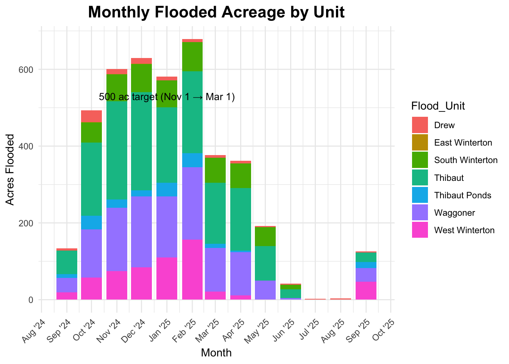

CSV directory: docs/csv_output CSV files found: 22 First file: docs/csv_output/flood_report_data_2024-09-22_0.18.csv Blackrock Waterfowl Management Area
CSV directory: docs/csv_output CSV files found: 22 First file: docs/csv_output/flood_report_data_2024-09-22_0.18.csv 
---
title: "Blackrock Waterfowl Management Area"
format: html
---
```{r read_csvs, echo=FALSE, message=FALSE, warning=FALSE}
library(dplyr)
library(readr)
library(stringr)
library(lubridate)
# 1a. Point to the folder containing your flood_report CSVs
csv_dir <- "docs/csv_output"
# 1b. List all matching CSV files (e.g. "flood_report_data_2024-09-22_0.21.csv")
csv_files <- list.files(
path = csv_dir,
pattern = "^flood_report_data_[0-9]{4}-[0-9]{2}-[0-9]{2}_.*\\.csv$",
full.names = TRUE
)
# Debug: Check if files are found
cat("CSV directory:", csv_dir, "\n")
cat("CSV files found:", length(csv_files), "\n")
if(length(csv_files) > 0) {
cat("First file:", csv_files[1], "\n")
}
# 1c. Read each CSV, parse the date from its filename, and bind them together
monthly_raw <- lapply(csv_files, function(path) {
fname <- basename(path)
date_part <- str_match(
fname,
"^flood_report_data_([0-9]{4}-[0-9]{2}-[0-9]{2})_.*\\.csv$"
)[,2]
report_dt <- as.Date(date_part, format = "%Y-%m-%d")
# Read the CSV (must contain at least columns "Flood_Unit" and "acres_flooded")
df <- read_csv(path, show_col_types = FALSE) %>%
mutate(report_date = report_dt)
return(df)
}) %>%
bind_rows() %>%
# Keep only the columns we need
select(Flood_Unit, acres_flooded, report_date)
# (Optional) Quick check:
# glimpse(monthly_raw)
```
```{r monthly_raw, echo=FALSE, message=FALSE, warning=FALSE}
library(dplyr)
library(lubridate)
library(tidyr)
library(knitr)
library(stringr)
# 4a. Point to your folder of report HTMLs
report_dir <- "docs/reports"
# 4b. Grab all filenames matching “bwma_flood_report_YYYY-MM-DD_*.html”
html_files <- list.files(
path = report_dir,
pattern = "^bwma_flood_report_[0-9]{4}-[0-9]{2}-[0-9]{2}_.*\\.html$",
full.names = FALSE
)
# 4c. Build a tibble with columns:
# - file (the filename itself)
# - date = as.Date("YYYY-MM-DD") parsed from the filename
# - year = year(date)
# - month_num = month(date)
# - month_name = ordered factor (Jan, Feb, …, Dec)
# - fy_num = if month >= 7 then year + 1 else year
# - fy_label = "2025-26", etc.
# - day_only = format(date, "%d")
# - full_link = "<a href='...'>day_only</a>"
df_links <- tibble(file = html_files) %>%
mutate(
# Extract "YYYY-MM-DD" via regex
date = as.Date(str_extract(file, "[0-9]{4}-[0-9]{2}-[0-9]{2}")),
year = year(date),
month_num = month(date),
month_name = month(date, label = TRUE, abbr = TRUE),
# Fiscal year runs July→June: if month >= 7, belong to (year+1); else to (year)
fy_num = if_else(month_num >= 7, year, year - 1L),
# fy_num = if_else(month_num >= 7, year + 1L, year),
# Build label "2025-26", "2026-27", etc.
fy_label = paste0(
fy_num, "-",
str_sub(as.character(fy_num + 1L), 3, 4)
),
# Only show the day number (e.g. "22") as link text
day_only = format(date, "%d"),
# Build the clickable HTML anchor
full_link = paste0(
"<a href='", report_dir, "/", file,
"' target='_blank'>", day_only, "</a>"
)
)
# 4d. For each (fy_label × month_name), pick the **earliest** date
df_one_per_month <- df_links %>%
group_by(fy_label, month_name) %>%
slice_min(date, n = 1, with_ties = FALSE) %>%
ungroup()
# 4e. Make an ordered factor of all 12 calendar months (Jan → Dec)
all_months_ord <- ordered(month.abb, levels = month.abb)
# 4f. Use complete() so that every (fy_label × month) combination exists (fill missing with "")
wide_tbl <- df_one_per_month %>%
select(fy_label, month_name, full_link) %>%
complete(
fy_label,
month_name = all_months_ord,
fill = list(full_link = "")
) %>%
# 4g. Reorder month_name into new factor "Jul→Jun"
mutate(
month_for_fy = factor(
as.character(month_name),
levels = c(
"Jul", "Aug", "Sep", "Oct", "Nov", "Dec",
"Jan", "Feb", "Mar", "Apr", "May", "Jun"
)
)
) %>%
select(fy_label, month_for_fy, full_link) %>%
pivot_wider(
names_from = month_for_fy,
values_from = full_link
) %>%
arrange(fy_label) %>%
# 4h. Explicitly choose Jul→Jun order for the columns:
select(
fy_label,
Jul, Aug, Sep, Oct, Nov, Dec,
Jan, Feb, Mar, Apr, May, Jun
)
# 4i. Render as an HTML table (escape=FALSE so the <a> HTML works)
knitr::kable(
wide_tbl,
format = "html",
escape = FALSE,
table.attr = "class='table table-striped'"
)
```
<!-- HTML iframe to embed a specific report --> <iframe src="reports/bwma_flood_report_2025-09-17_0.15.html" width="100%" height="800px" style="border: none;" id="report-frame"></iframe>
```{r monthly_flooded_acres, echo=FALSE, message=FALSE, warning=FALSE, results='hide'}
library(dplyr)
library(lubridate)
library(ggplot2)
# 3a. Fix any "Waggonner" → "Waggoner" typo and floor each report_date to the 1st of that month
monthly_fixed <- monthly_raw %>%
mutate(
Flood_Unit = recode(Flood_Unit,
"Waggonner" = "Waggoner",
.default = Flood_Unit),
month_date = floor_date(report_date, unit = "month")
)
# 3b. Compute latest flooded acres per (Flood_Unit × month_date)
monthly_avg <- monthly_fixed %>% filter(Flood_Unit != "Total") %>%
group_by(Flood_Unit, month_date) %>%
slice_max(report_date, n = 1, with_ties = FALSE) %>%
ungroup() %>%
select(Flood_Unit, month_date, acres_flooded) %>%
rename(avg_acres = acres_flooded)
# 3c. Plot stacked bars + a dashed "500 ac target" line from Nov 1 → Mar 1
monthly_avg %>% ggplot(aes(x = month_date, y = avg_acres, fill = Flood_Unit)) +
geom_col() +
geom_segment(
aes(
x = as.Date("2024-11-01"),
xend = as.Date("2025-09-01"), #update monthly
y = 500,
yend = 500
),
color = "black",
linetype = "dashed",
size = 0.7
) +
annotate(
"text",
x = as.Date("2025-01-01"),
y = 530, # slight offset above 500
label = "500 ac target (Nov 1 → Mar 1)",
size = 3.5,
hjust = 0.5
) +
scale_x_date(
limits = c(min(monthly_avg$month_date) - 15, max(monthly_avg$month_date) + 15), # dynamic limits
date_breaks = "1 month",
date_labels = "%b '%y" # e.g. "Sep '24", "Oct '24", … "Sep '25"
) +
labs(
title = "Monthly Flooded Acres by Unit", # update on new calendar year
x = "Month",
y = "Acres Flooded"
) +
theme_minimal() +
theme(
axis.text.x = element_text(angle = 45, hjust = 1),
plot.title = element_text(size = 16, face = "bold", hjust = 0.5)
)
```